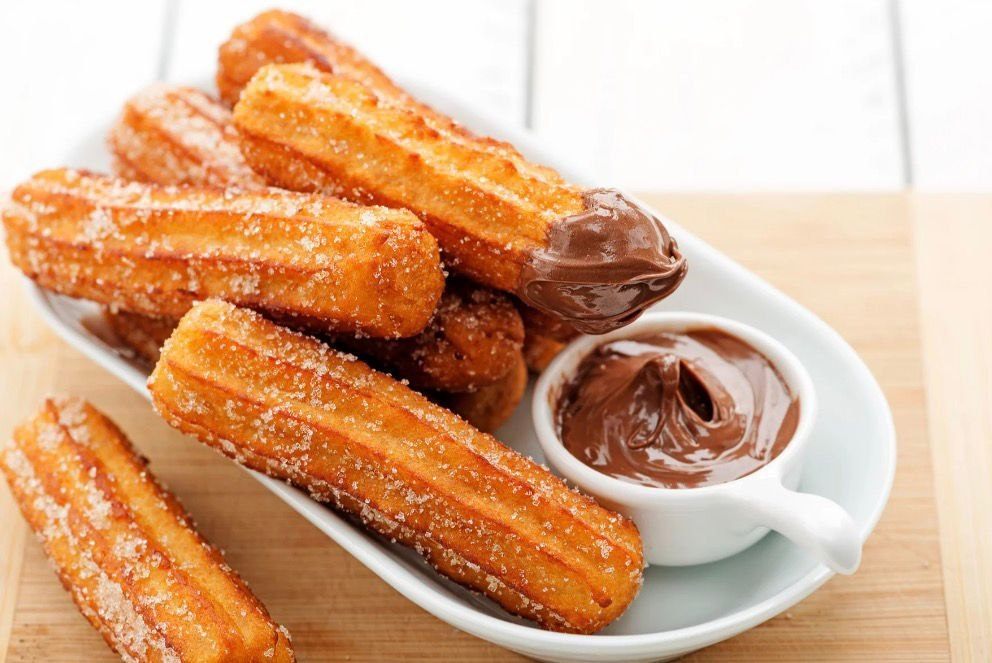

Churros

Ingredients
- Flour
- Water
- Butter
- Eggs
- Sugar
Churros Recipe
- In a saucepan, combine water, butter, sugar, and salt. Bring to a boil.
- Remove from heat and add flour. Stir until the mixture forms a dough.
- Let the dough cool slightly, then mix in eggs and vanilla extract until smooth.
- Heat oil in a deep pan for frying.
- Pipe the dough into hot oil using a piping bag with a star tip.
- Fry until golden brown and crispy, then remove and drain on paper towels.
- Roll the churros in a mixture of sugar and cinnamon.
- Serve warm with chocolate sauce if desired.
nutritional facts
| nutrient | amount |
|---|---|
| Water | 1 cup |
| Butter | 1/2 cup |
| Sugar | 2 tbsp |
| Salt | 1/4 tsp |
| Flour | 1 cup |
| Eggs | 2 |
| Vanilla Extract | 1 tsp |
| Oil (for frying) | As needed |